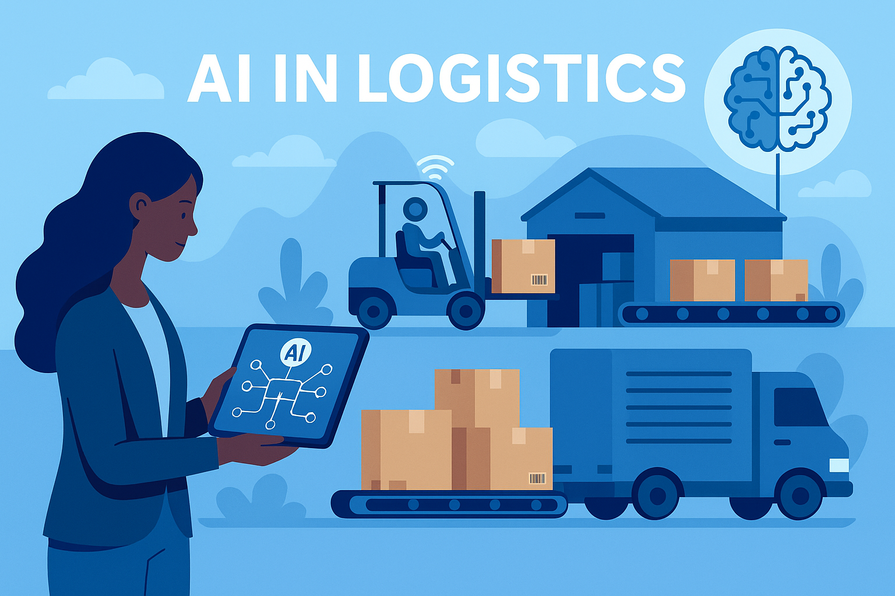
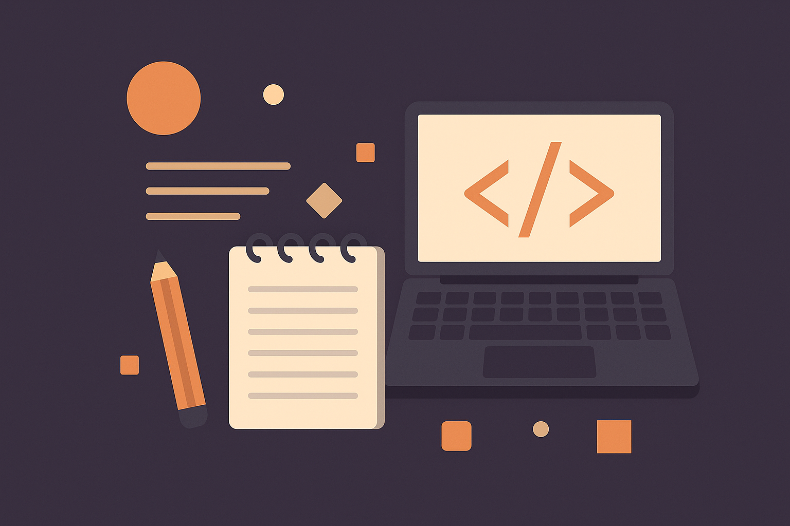

My Technical Interests
Artificial Intelligence in Logistics
I am interested in how AI can improve warehouse automation, stock prediction, and logistics efficiency through intelligent algorithms.
Web Development and Accessibility
I aim to build accessible websites that are usable by everyone. My focus is on semantic HTML, color contrast, and compliance with WCAG standards.
